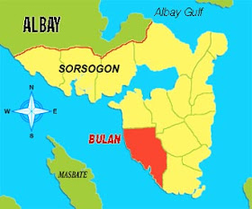
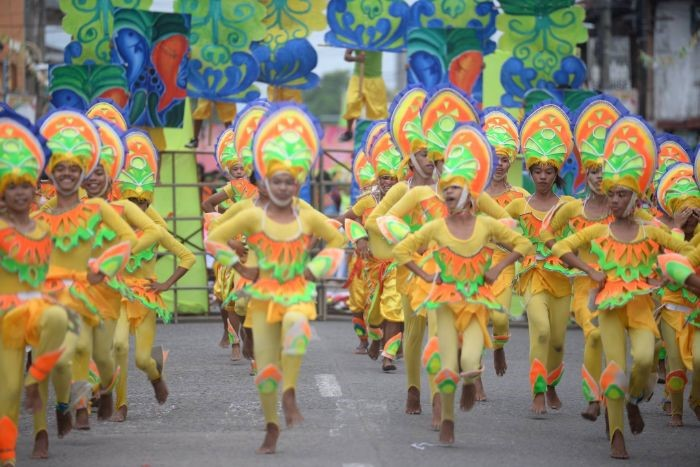

Padaraw Festival
Every year, Bulan celebrates Padaraw Festival as part of the town's culture and thanksgiving. The event honors the patron saint, Our Lady of the Immaculate Conception.

Explore the Padaraw Festival and the coastal traditions that shape Bulan's community spirit.
Bulan's Padaraw Festival celebrates the town’s fishing heritage, devotion, and the shared unity that binds its people together.

Every year, Bulan celebrates Padaraw Festival as part of the town's culture and thanksgiving. The event honors the patron saint, Our Lady of the Immaculate Conception.
Padaraw comes from a Bicol term used by fishermen. "Daraw" refers to schools of fish converging at one point, and Padaraw reflects the idea of unity and shared abundance.
The festival brings people of Bulan together to show unity and strength amid struggles. It expresses gratitude for the gifts of the sea, the plains, and the mountains while inspiring hope for the future.